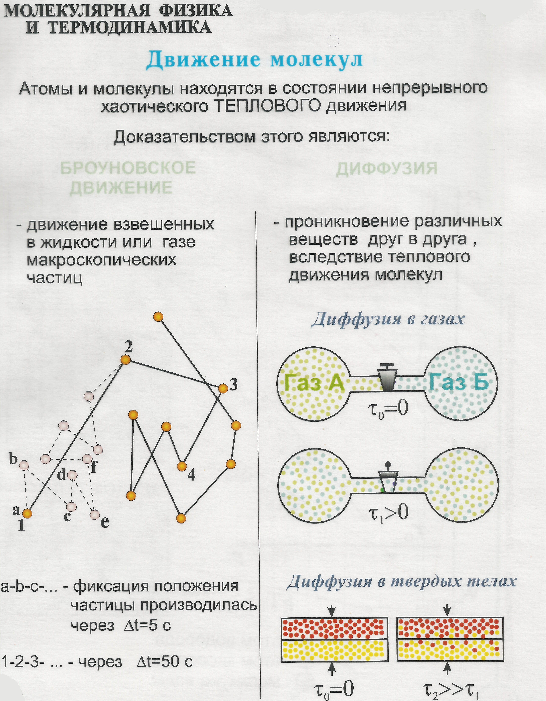
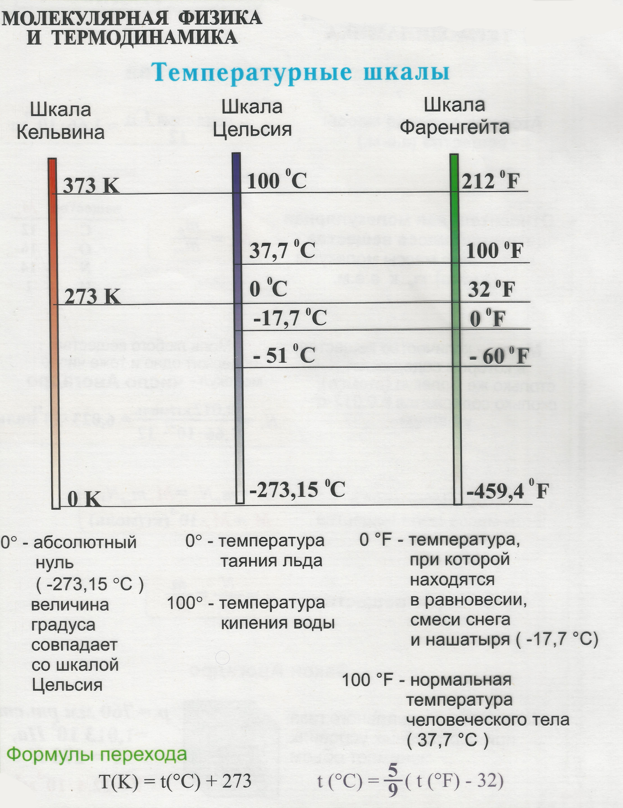
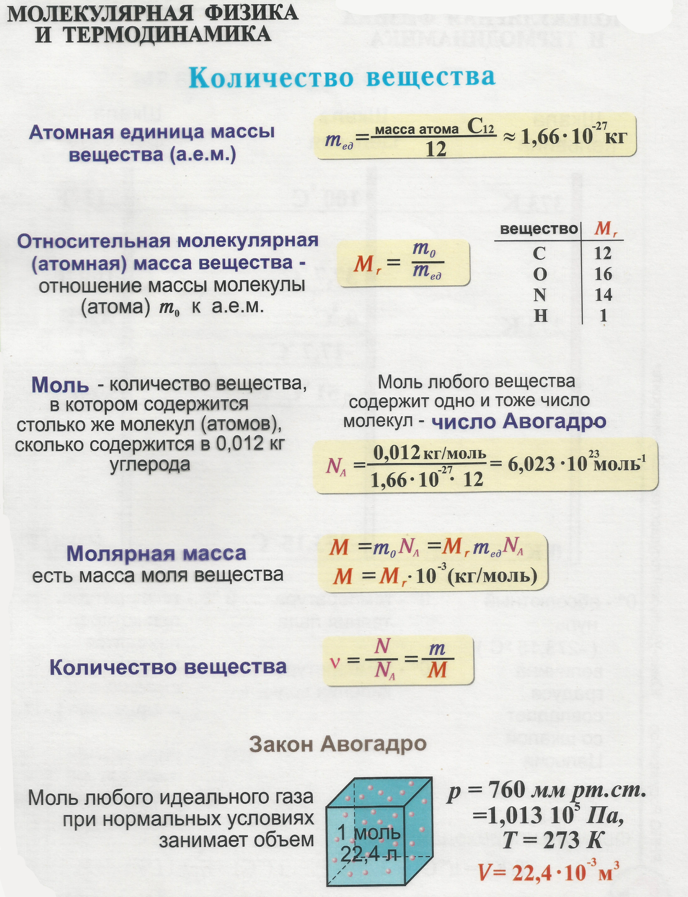

Для изучения законов движения тел в механике не нужно изучать внутреннее строение тел, достаточно знать, что тело имеет массу и определенные размеры. Свойства тел зависят от их внутренней структуры — природы частиц, из которых построено тело, и их взаимного расположения. Молекулярная физика изучает физические свойства вещества в газообразном, жидком и твердом состояниях, а также процессы перехода из одного состояния в другое.
Основные представления о строении вещества.

СТРОЕНИЕ ВЕЩЕСТВА
Элементарные частицы
- Элементарные частицы. Нас окружают разнообразнейшие по своим свойствам тела. Даже при внимательном их рассматривании они нам кажутся сплошными, непрерывными. Но наши органы ощущений вводят нас в заблуждение. На самом деле все тела имеют прерывистую, дискретную структуру. Они состоят из мельчайших частиц вещества, получивших название элементарных частиц.
Элементарные частицы выполняют различные функции в природе. Одни из них — электроны, протоны, нейтроны — являются теми мельчайшими «кирпичиками», из которых построены все окружающие нас тела. Другие элементарные частицы осуществляют связь и взаимодействие между частицами вещества. Роль некоторых элементарных частиц пока еще остается неясной.
Точные размеры элементарных частиц определить невозможно, так как эти частицы не имеют четких границ. Так, например, о размерах электрона можно только сказать, что они не превышают 10~16 м, а размеры протонов и нейтронов одинаковы и примерно равны 10~16 м.
Как видно из примеров, размеры элементарных частиц чрезвычайно малы. По этой причине визуальное наблюдение элементарных частиц невозможно, но мы можем видеть и фотографировать следы, которые они оставляют в веществе. По фотографиям этих следов ученые научились определять скорость, энергию, массу и другие свойства элементарных частиц. Условились считать, что масса частицы является ее главной характеристикой. Массы элементарных частиц ничтожно малы по сравнению с массой окружающих нас обычных тел (макротел), поэтому массы частиц обычно сранивают с массой электрона. Ее условно принимают за единицу массы и называют электронной единицей массы (сокращенно э. е. м.). 1 э. е. me=9,Ы0~31 кг . В природе существуют элементарные частицы, масса которых меньше массы электрона, но есть и такие частицы, масса которых превышает массу электрона в несколько тысяч раз. Массы протонов и нейтронов примерно одинаковы: масса протона составляет 1836 э. е. м. , а масса нейтрона 1838 э. е. м.
- Взаимодействие элементарных частиц. Все разнообразие физических явлений и все известные нам свойства веществ в конечном счете обусловливаются взаимодействием элементарных частиц. Между элементарными частицами известно четыре типа взаимодействий: гравитационное, электромагнитное, сильное и слабое.
Гравитационное взаимодействие осуществляется между всеми без исключения частицами вещества и зависит от их массы. Оно проявляется в виде сил тяготения, величина которого определяется по закону всемирного тяготения. Гравитационные силы дальнодействующие: они проявляются на любом расстоянии. Из всех видов взаимодействия гравитационное является наиболее слабым.
Электромагнитное взаимодействие не зависит от массы элементарных частиц и в 10аб раз сильнее гравитационного. Оно осуществляется только между электрически заряженными частицами вещества и некоторыми нейтральными частицами, которые не имеют электрического заряда, но
обладают магнитными свойствами. Электромагнитное взаимодействие проявляется в нескольких видах: а) в виде электрических сил притяжения и отталкивания; б) в виде магнитных сил; в) в виде электромагнитного излучения тел и частиц и др.
Гравитационное и электромагнитное взаимодействие проявляются как между мельчайшими частицами вещества, так и между макроскопическими телами. Они оказывают непосредственное воздействие на человека, тогда как сильное и слабое взаимодействие на человека непосредственно не действуют и проявляются только в мире элементарных частиц.
Сильные и слабые взаимодействия. Особо важная роль в природе принадлежит электромагнитному взаимодействию. Оно обусловливает все электрические и магнитные явления, образование макроскопических тел, является причиной излучения света частицами вещества и в конечном счете к нему сводятся все химические и биологические процессы.
- Элементарные частицы и электрический заряд. Способность частиц вещества к электромагнитным взаимодействиям имеет свою количественную меру. Величина, характеризующая свойство частиц вещества участвовать в электромагнитных взаимодействиях, называется электрическим зарядом.
Если частица вещества обладает электрическим зарядом, то это означает, что она способна к электромагнитным взаимодействиям. В природе существуют частицы без электрического заряда, но не существует электрического заряда без его носителя — частицы вещества. Величина электрического заряда, как известно, в СИ измеряется в кулонах (сокращенно Кл).
Оказалось, что электрический заряд элементарных частиц, например электрона, не делится на более мелкие доли и передается от одной частицы к другой целиком. По этой причине его называют элементарным зарядом и обозначают буквой е. В результате тщательно проведенных измерений установлено, что элементарный заряд е== 1,6-10-19 Кл, Элементарный заряд является самым маленьким электрическим зарядом, более мелких порций электричества в природе не обнаружено.
При столкновении двух заряженных элементарных частиц они могут объединиться в более крупные частицы вещества, которые' нередко теряют способность к электромагнитным взаимодействиям. Значит, при объединении заряженных элементарных частиц их заряды могут нейтрализоваться. Это свойство электрически заряженных частиц вещества аналогично свойству двух равных по абсолютной величине, но противоположных по знаку чисел: их сумма всегда равна нулю. По этой аналогии все электрически заряженные частицы условно разделены на две группы: положительно и отрицательно заряженные частицы. Условились считать, что электрон заряжен отрицательно, а протон положительно. Опытным путем установлено, что в природе существует только два рода электрически заряженных частиц, при этом однородно заряженные частицы отталкиваются, а разнородно заряженные притягиваются друг к другу. Следовательно, все частицы, которые отталкиваются от протона, заряжены положительно; те частицы, которые притягиваются к протону, заряжены отрицательно.
Атомы вещества
1.Атомы и химические элементы. Особое место среди элементарных частиц занимают протоны, нейтроны и электроны. Взаимодействуя между собой, они образуют сложные, но очень устойчивые и химически неделимые частицы, получившие название атомов вещества. Атомы, состоящие из одинакового числа протонов, нейтронов и электронов, обладают одинаковыми химическими свойствами. Определенный вид атомов называется химическим элементом. Каждый элемент состоит из одинаковых атомов, но атомы одного элемента по строению и свойствам отличаются от атомов других элементов. Атом — это мельчайшая частица вещества, которая сохраняет все свойства данного элемента. Если атом распадается на отдельные элементарные частицы, то они химических свойств данного элемента уже не сохраняют
- Опыт Резерфорда. В 1911 г. под руководством известного английского физика Эрнеста Резерфорда был произведен опыт, позволивший ему открыть тайну внутренней структуры атома. В этом знаменитом опыте очень тонкую пластинку металла (фольгу) подвергали интенсивной бомбардировке потоком быстролетящих частиц.
Удар альфа-частицы о такой экран вызывает вспышку света, которую называют сцинтилляцией.
- Ядерная модель атома. Если альфа-частицы свободно проходят через слой металла, то этот факт можно объяснить лишь тем, что значительная часть пространства внутри атомов свободна от частиц вещества, сравнимых по массе с альфа-частицами. Встреча альфа-частицы с электроном, масса которого почти в 8000 раз меньше массы альфа-частицы, не может изменить направление ее движения.
Расчеты, проведенные Резерфордом, показали, что рассеивание альфа-частиц могло произойти только в результате столкновения с положительно заряженными частицами вещества, сконцентрированными в атоме внутри области диаметром порядка 10-13 м. Эта часть атома была названа Резерфордом атомным ядром. В ядре сосредоточена почти вся масса и весь положительный заряд атома. Размеры атомных ядер очень малы: они почти в 104 раз меньше размеров атома. Если мысленно увеличить размеры ядра до размеров шарика радиусом в 1 см, то атом превратится в шар радиусом 100 м!
Ядро атома состоит из протонов и нейтронов. Все остальное пространство внутри атома заполнено.электронами, совершающими сложные движения вокруг ядра. Если бы электроны не двигались вокруг ядра, то они притянулись бы к положительно заряженному ядру и ядро стало бы электрически нейтральным. Но это предположение противоречит результатам опыта Резерфорда.
Таким образом, из описанных опытов Резерфорд сделал вывод, что атомы всех химических элементов состоят из положительно заряженных ядер, вокруг которых движутся отрицательно заряженные электроны. Эта модель атома называется ядерной или планетарной, так как она напоминает строение солнечной системы.
4.Заряд ядра. Поскольку входящие в состав ядра атома всех химических элементов нейтроны электрически не заряжены, то суммарный заряд ядра определяется только зарядом находящихся внутри него протонов.
Число протонов в ядре данного элемента равно порядковому номеру элемента в периодической системе элементов Д. И. Менделеева. Так, ядро водорода имеет один протон, ядро гелия — два, ядро меди — 29, ядро урана — 92 протона. Альфа-частица, в состав которой входит два протона, является ядром атома гелия.

Электронная оболочка атома
1.Число электронов в атоме. В нормальном состоянии атомы всех веществ электрически нейтральны. Значит, положительный заряд ядра и отрицательный заряд всех электронов, вращающихся вокруг него, одинаковы по величине. Так как величина заряда у протона и электрона одинакова, то один протон нейтрализует заряд одного электрона. Следовательно, в нормальном состоянии число электронов в атоме равно числу протонов в его ядре, и это число совпадает с номером данного элемента в периодической системе элементов Д. И. Менделеева.
2.Ионизация атома. Электрически нейтральный атом имеет столько электронов, сколько протонов содержит его ядро. При нагревании вещества или в результате соударения атома с другими частицами атом может перейти в возбужденное состояние: наиболее удаленные от ядра электроны приобретают энергию, которая может оказаться достаточной для того, чтобы оторваться от ядра и вылететь за пределы атома. При отрыве электрона от нейтрального атома уменьшается'отрицательный заряд атома, а положительный заряд ядра остается нескомпенсированным, и атом в целом заряжается положительно. Если же нейтральный атом присоединит электроны, атом станет отрицательно заряженным. Электрически заряженный атом (или группа атомов) называется ионом, а процесс превращения нейтральных атомов вещества в электрически заряженные частицы называется ионизацией атомов.
3.Электронная оболочка атома. Движение электрона внутри атома подчиняется строгим закономерностям. Электрон вращается вокруг ядра с очень большой скоростью и образует вокруг него своеобразное электронное облако. При этом точно определить траекторию движения электрона внутри электронного облака принципиально невозможно. Электронное облако — это не траектория движения электрона, а часть внутриатомного пространства, в котором движется электрон. Форма и расположение электронных облаков относительно ядра зависят от состояния движения электронов внутри атома. Размеры электронного облака в основном обусловливаются энергией электронов, которые его образуют.
Все электроны, обладающие одинаковой энергией, находятся на одном и том же энергетическом уровне и образуют вокруг ядра электронный слой. В атомах имеется 7 энергетических уровней и соответственно этому 7 электронных слоев, их нумеруют, начиная от ядра.
В каждом электронном слое может содержаться определенное максимальное число электронов:
Х=-2п7, где п — номер слоя. Следовательно, первый слой максимально может содержать 2 электрона, второй — 8, третий — 18, четвертый — 32 электрона и т. д.
Электроны, находящиеся в одном и том же слое, обладают одинаковой энергией, однако моменты импульса (количества движения) у них различны и по этой причине состояния их движения неодинаковы.
- Строение электронных оболочек атомов. Зная общее число электронов в атоме и число электронов в слое, можно составить структурную схему строения электронных оболочек всех атомов.
Атомы и молекулы
1.Молекулы. На сегодняшний день известно 107 (столько сколько в периодический таблице химических элементов) различных видов атомов. Из них 88 видов устойчивы и постоянно существуют в природе, а 19 видов неустойчивы и были получены в лабораторных условиях *..
Атомы химических элементов в результате электромагнитного взаимодействия соединяются между собой и образуют еще более сложные частицы вещества — молекулы. В отличие от атомов молекулы химически делимые частицы вещества. Молекулы способны существовать самостоятельно, сохраняя все свойства данного вещества.
При объединении одинаковых атомов образуются молекулы простых веществ, например кислорода, водорода, хлора и др. При объединении атомов разных элементов (например, кислорода и водорода) образуются молекулы сложных веществ (например, воды). Подобно тому, как из 33 букв русского алфавита можно составить тысячи слов, так из различных сочетаний атомов разных элементов могут образоваться различные вещества, число и свойства которых практически неисчерпаемы.
2.Ионная связь. В природе существует дна основных способа объединения атомов в молекулы. Первый способ состоит в том, что один из атомов отдает один или несколько электронов, находящихся в наиболее удаленном от ядра слое, другому атому. Благодаря этому нейтральные атомы превращаются в ионы противоположных знаков и нритягиваются друг к другу. Связь этого типа между атомами называется ионной.
3.Ковалентная связь. Другим типом связи между атомами в молекулах является ковалентная связь. Она может образоваться как между атомами одного и того же элемента, так и между атомами разных элементов, например при сближении двух атомов водорода на расстояние, сравнимое с их собственными размерами, их электроны начинают одновременно вращаться вокруг обоих ядер. Они образуют общее двухэлектронное облако, которое притягивается к обоим ядрам сильнее, чем к каждому в отдельности, и таким способом не дает им разлететься в стороны.
4.Два вида ковалентной связи. Различают два вида ковалентной связи: неполярную и полярную. В молекулах, состоящих из одинаковых атомов, общая электронная пара размещается симметрично и, таким образом, в одинаковой мере принадлежит обоим атомам. Такая ковалентная связь называется неполярной.
Если же молекула состоит из различных атомов, то общая электронная пара смещается в сторону того атома, у которого способность притягивать и удерживать электроны на внешнем слое больше. Вследствие этого в молекуле возникает некоторое смещение избыточного отрицательного слоя.

§ 10. Масса атомов и молекул
- Атомная единица массы. Как известно, атомы и молекулы состоят из определенного количества элементарных частиц — электронов, протонов и нейтронов, обладающих массой. Следовательно, атомы и молекулы всех веществ также обладают определенной массой. Масса атома и молекулы чрезвычайно мала. В настоящее время ее измеряют с очень большой точностью при помощи специальных приборов — масс-спектрометров.
Для измерения массы атомов и молекул была принята специальная единица — атомная единица массы (сокращенно а. е. м.). За атомную единицу массы принимается 1/12 доля массы атома углерода.
Масса атома, измеренная в атомных единицах массы, называется атомной массой.
Масса молекулы, измеренная в атомных единицах массы, называется молекулярной массой. Молекулярная масса представляет собой сумму атомных масс атомов, составляющих данную молекулу. Определим, например, молекулярную массу оксида азота (I) — так называемой закиси азота — газа, применяемого в медицине для наркоза. Химическая формула этого вещества N20, следовательно, ее молекулярная масса (с точностью до целых)
/7г=2-14 а. е. м. + 16 а. е.м.=44 а. е. м. Аналогично можно определить молекулярную массу любого вещества.
- Закон Авогадро. Постоянная Авогадро. Определим молекулярную или атомную массу ряда веществ Возьмем столько граммов каждого вещества, сколько атомных единиц массы содержит одна его молекула или атом, т.е. 12 г углерода, 32 г кислорода, 28 г азота и т. д.
Количество вещества, масса которого в граммах численно равна его молекулярной или атомной массе, называется молем данного вещества. Будем обозначать массу моля данного вещества (молярную массу) буквой n.. В СИ ее размерность кг/моль. Таким образом, один моль углерода равен 12 х х 10~3 кг/моль, кислорода 32-10-3 кг/моль, и тому подобное
Зная массу одного моля и массу одной молекулы (атома), найдем число молекул, содержащихся в одном моле различных веществ. Если проделать соответствующие расчеты (выполните их самостоятельно), то для всех веществ результаты получаются одинаковыми, т. е. в одном моле
любого вещества содержится одинаковое число атомов или молекул: NA=6,02 • 1023 1/моль. Это есть закон Авогадро — один из фундаментальных законов молекулярной физики. Число атомов или молекул, содержащихся в одном моле вещества, носит название постоянной Авогадро.
Зная постоянную Авогадро NA и массу одного моля , можно определить массу атома или молекулы исследуемого вещества:
- Число молекул или атомов, составляющих данное тело. Зная постоянную Авогадро, можно определить и число атомов или молекул п, составляющих тело любой массы М. Если масса одного атома или молекулы равна т, то, очевидно, масса всего тела М=тп, а масса одного моля n=mN.
- Количество вещества. Все окружающие нас тела состоят из различных веществ. И кирпич, и таблетка ацетилсалициловой кислоты, и стакан воды содержат определенное количество вещества. О количестве вещества, заключенном внутри тела, можно судить по количеству его абсолютно одинаковых структурных элементов, из которых оно состоит. Такими структурными элементами могут быть молекулы, ионы, атомы и другие частицы, из которых построено изучаемое вещество. Однако число частиц, составляющих макроскопические тела, настолько велико, что практически их сосчитать невозможно. Поэтому для определения количества вещества, составляющего данное тело, условились сравнивать число частиц, из которых оно состоит, g числом частиц, содержащихся в одном моле углерода.
Величина, измеряемая отношением числа структурных элементов п, из которых построено данное тело, к числу атомов N, содержащихся в одном моле углерода, называется количеством вещества:
За единицу количества вещества в СИ принимается такое $ве количество, которое содержится в одном моле углерода. Единице количества вещества присвоено название моль. Так, если количество вещества равно 1,5 моля, то это означает, что данное тело содержит в 1,5 раза больше частиц (молекул, атомов, ионов), а значит и вещества, чем его содержится в 12 г (в одном моле) углерода.
- Плотность вещества. Сравним массу алюминиевого и медного цилиндров одинакового объема, положив один из них на одну чашку весов, а другой — на вторую. Медный цилиндр тяжелее алюминиевого. Значит масса медного цилиндра больше алюминиевого. Так как массы цилиндров различны, то и количество вещества, из которого они состоят, неодинаково: его больше в том цилиндре, масса которого больше. Поскольку объемы цилиндров одинаковы, то, очевидно, вещество внутри медного цилиндра упаковано более плотно, чем внутри алюминиевого: в каждой единице объема медного цилиндра содержится больше вещества, чем у алюминиевого.
Величина, измеряемая массой вещества, содержащейся в единице объема тела, называется плотностью вещества:
Плотность вещества характеризует плотность упаковки частиц вещества внутри тела. Установим единицу плотности вещества в СИ:кг/м3
За единицу плотности веществ в СИ принимается плотность такого вещества, 1 м3 которого имеет массу в 1 кг.
